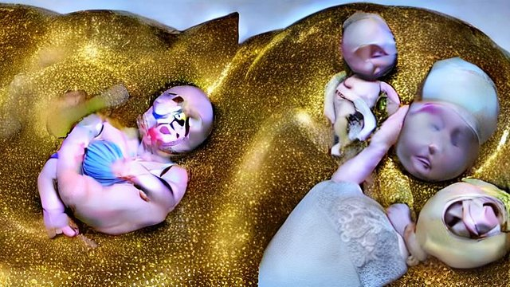
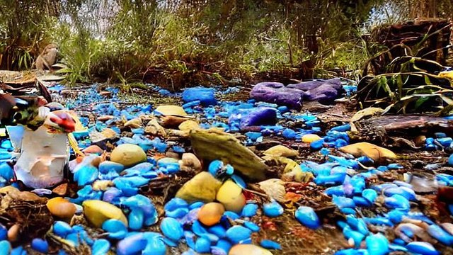
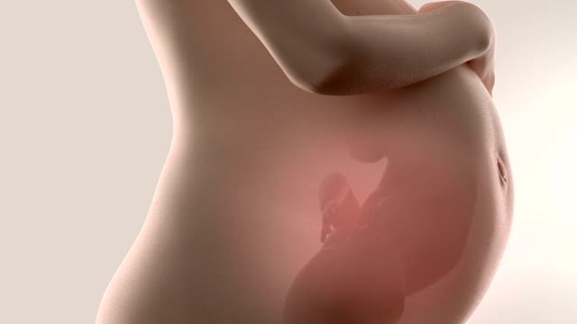
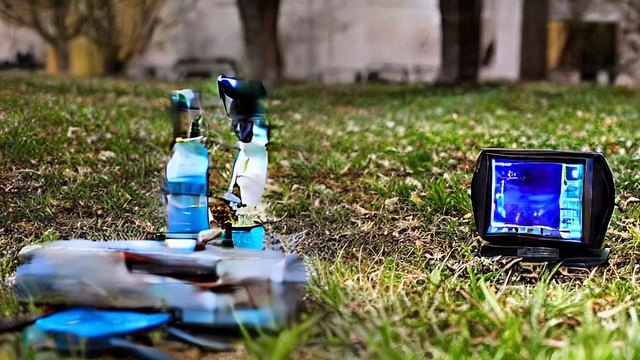
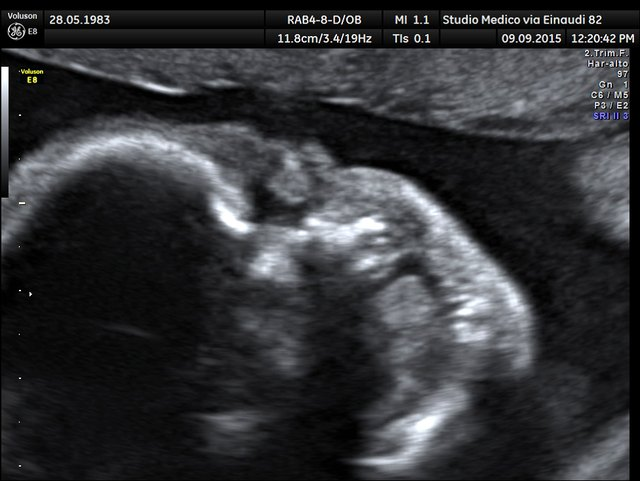

Scene 0 (script scene 0)
A las 18 semanas de gestación, cuando el feto mide apenas unos 14 centímetros, ya empieza a escuchar. No el silencio que imaginaríamos, sino un concierto constante: el latido del corazón de su madre, que percibe como un tambor grave y rítmico, y el rumor del flujo sanguíneo, un siseo que lo acompaña día y noche. Ese es el primer paisaje sonoro de cualquier ser humano. Lo que durante milenios permaneció oculto hoy puede verse con ecografías en cuatro dimensiones, y lo que revelan es que el feto no es un pasajero pasivo: es un oyente atento que lleva meses estudiando la voz de su madre antes de nacer. En los próximos minutos vas a descubrir qué experimentos concretos demostraron que los fetos
query: fetus hearing mother's heartbeat sound 4D ultrasound
LEGACY

ai_local_sd · image
auto relevance: 0.00
/tmp/autotube_p05_canary/p05-canary-20261025/legacy/ai_images/hook/scene_000_f3c1c0bcc5.jpg
P05
pixabay_photo · image
final: 0.31 · text: 0.26 · preview: 0.22
route: MEDICAL · type: STOCK_IMAGE · candidates: 90
auto relevance: 0.00
pixabay_photo:4874281
agreement: False · auto delta: 0.00 · fallback: — · archive: False · AI: False · latency: 7439.709 ms · license: UNKNOWN
Scene 1 (script scene 2)
Conviene ser precisos: los estudios describen respuestas motoras y faciales medibles, no estados emocionales conscientes. Lo que se especula es hasta dónde llega esa capacidad de procesamiento; lo que está documentado es que el útero es mucho menos silencioso de lo que dicta la intuición. Los latidos de la madre, su voz, el flujo sanguíneo y los sonidos externos atraviesan el líquido amniótico y llegan al feto como una señal continua. Y aquí aparece la pregunta que abre el siguiente capítulo: si el oído ya está activo a las 25 semanas, ¿qué ocurre con el tacto, el gusto y el olfato? Porque los registros muestran que el feto también se toca la cara, reacciona a sustancias del líquido amniótic
query: fetus sensory world womb sounds
LEGACY

ai_local_sd · image
auto relevance: 0.00
/tmp/autotube_p05_canary/p05-canary-20261025/legacy/ai_images/desarrollo/scene_001_6b1aa4d2a0.jpg
P05

pixabay · video
final: 0.27 · text: 0.23 · preview: 0.24
route: GENERIC · type: STOCK_VIDEO · candidates: 90
auto relevance: 0.60
/tmp/autotube_p05_canary/p05-canary-20261025/p05/video_clips/pixabay_64feeec5900e.mp4
agreement: False · auto delta: 0.60 · fallback: — · archive: False · AI: False · latency: 6683.828 ms · license: UNKNOWN
Scene 2 (script scene 10)
En 2010, el Royal College of Obstetricians and Gynaecologists del Reino Unido publicó un informe que sacudió el debate: el feto no puede experimentar dolor antes de las 24 semanas de gestación, y la conciencia, tal como la entendemos, no surge dentro del útero sino después del nacimiento. El documento no era una opinión aislada. Reunía la evidencia disponible y trazaba una línea clara entre lo que el feto hace —moverse, responder, dormir— y lo que el feto experimenta. Esa distinción, sutil en apariencia, es la que separa un organismo reactivo de una mente que siente. Y la ciencia lleva más de una década intentando precisar dónde cae exactamente esa frontera.
query: fetal ultrasound 24 weeks scientific report medical study
LEGACY

ai_local_sd · image
auto relevance: 0.00
/tmp/autotube_p05_canary/p05-canary-20261025/legacy/ai_images/desarrollo/scene_002_7e97da4e86.jpg
P05

wikimedia_commons · image
final: 0.30 · text: 0.33 · preview: —
route: SCIENCE · type: ARCHIVAL_IMAGE · candidates: 90
auto relevance: 0.85
wikimedia_commons:63017060
agreement: False · auto delta: 0.85 · fallback: — · archive: True · AI: False · latency: 2984.283 ms · license: CC BY-SA 3.0